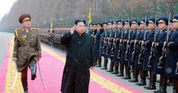
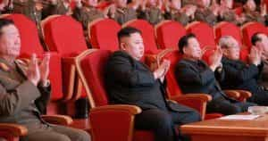

Quintus can be found at qcurtius.com. He is the author of the books On Duties, Thirty Seven, Sallust: The Conspiracy Of Catiline And The War Of Jugurtha, and other books. His work has been reviewed at Taki's Magazine. He can be followed on Twitter


There has been much talk in the news of possible military action of some sort on the Korean peninsula. Western observers—the United States in particular—suspect that the North Korean government is planning shortly to test a nuclear device. Before, US officials have repeatedly expressed their dissatisfaction to their Chinese counterparts regarding North Korea’s refusal to abide by its previous treaty obligations. Compounding the confusion are recent statements by President Trump that he plans “solve” the North Korean problem one way or another.
Despite all the hype and all the talk, however, all sides know that little is going to change in the region. The permanent state of irritation in the region will continue. Everyone involved simply has too much too lose; only a suicidal fool would launch an unprovoked act of aggression in the area. We will explain here why this is so.
China’s posture in Northeast Asia has traditionally been to keep competitive foreign powers at a distance. South Korea and Japan are China’s rivals in the region, and Beijing has absolutely no desire to see either of them engaged in a war along its northern border. From the Chinese perspective, North Korea is an ideal neighbor: it is essentially like having one’s own pit bull at the front door, keeping away any unwanted intruders. Pyongyang is hostile, xenophobic, and militant, all qualities to be valued in a guard-dog. China is not about to jeopardize its security by doing anything meaningful to “rein in” its depraved border gargoyle.

China has every reason historically to fear foreign incursions in the region. There were a series of invasions of Korea from Japan from 1592 to 1598. The Chinese intervened to support their vassal state and repelled the Japanese invaders, and a truce was reached roughly where the North-South border stands today. Another incursion into Korea from Japan came in the 1890s. Again, China tried to repel the invaders, but was not successful; Korea became a Japanese protectorate.
In the Korean War of 1950-1953, the United States’ attempt to occupy the entire peninsula was met with a massive Chinese intervention that saved its North Korean ally from destruction. These interventions by China were not based on altruism, but on security considerations. No matter what, China does not want to see powerful foreign states on its doorstep. This is entirely logical and no one can blame them for it; we need only remember the Cuban Missile Crisis to see how the US acted when a foreign power attempted to intrude on its own sphere of influence. We mention these historical events to make the point that China sees North Korea as vital to its security. It will not do anything meaningful to undermine its own security interests. This seems to be lost on US planners, who keep trying vainly to pressure Beijing to do things it will never do.
This is not to say that Beijing is entirely happy with the situation. It does not like North Korea’s insistence on conducting nuclear tests. While Pyongyang is contemptuous of the world’s judgment, Beijing cares very much about how it is perceived by the world. Being associated with a state that counterfeits currency, deals drugs, and kidnaps people is hardly good for public relations. But the cold, hard reality is that Beijing is willing to swallow its neighbor’s uglier side to preserve its larger purposes.
So China will confine itself to cosmetic measures designed to appease the Americans but which in reality do nothing: it will suspend flights between itself and North Korea, shuffle some troops around on its borders, issue meaningless platitudes about peace, and every now and then shut the lights off in North Korea. There may come a time when Beijing racks up its abacus and decides that the cost of keeping the pit bull outweighs the benefit the dog is providing. But that time is a long way off.
North Korea, South Korea and Japan have their own security considerations; none of them want war, either. For all its bluster and bombast, the reality is that Kim Jong-Un is more interested in consolidating his hold on his people than engaging in reckless military adventures. His recent purges have ensured that his position is now unchallenged. For him, nuclear weapons are an insurance policy: insurance against both the West and China. From his perspective, he wants to make himself such a thorn in everyone’s side that the big players will conclude that it is simply too much trouble to get rid of him. He wants to engineer a situation where he is more valuable on the throne than off it. Keeping his people and his military in a permanent state of frenzy and crisis suits his purposes; this is right out of the Basic Dictator Handbook.

From Japan’s perspective, it wants no trouble, either. It knows its military is in no position (yet) to mount a challenge to regional rivals. It will need at least another 5 to 10 years to modernize its military and try to overcome decades of pacifist stagnation. South Korea, of course, has absolutely no desire to see any trouble break out. It knows that it will be the battleground in any conflict and that the entire society would be laid waste. The United States must also realize that the status quo is certainly much better than anything else. It has lived with a nuclear North Korea for a while and has no choice but to continue to do so. Of course, it must keep a close watch on the situation, since North Korea has never abandoned its goal of conquering the entire peninsula by force. But if any aggression were to happen, it knows that North Korea must take the international blame as the aggressor, as it did in 1950. Only in this way can it preserve any moral high ground in a conflict.
When all is said and done, nothing will change. The media hysteria means very little. The situation will continue to be what it has been for many decades: a state of permanent irritation. All the actors have done their calculations, and everyone realizes that the status quo—while not perfect—is far better than any alternative.
Read More: 10 Facts Regarding The US Strike On Syria